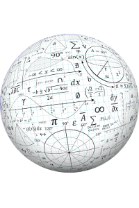
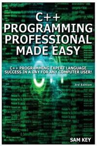
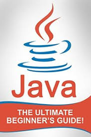

RESOURCES
1st year subjects
2nd year subjects
3rd year subjects
4th year subjects
1st Year
PSTC
C is a high-level structured oriented programming language, used in general purpose programming, developed by Dennis Ritchie at AT&T Bell Labs, the USA between 1969 and 1973.

MATHEMATICS
The goal of this MATHEMATICS course is to provide high school students and college freshmen an introduction to basic mathematics and especially show how mathematics is applied to solve fundamental engineering problems.
CHEMISTRY
ENGINEERING CHEMISTRY is one of the longest standing such programs at the interface of applied chemistry and chemical engineering.
PHYSICS
ENGINERRING PHYSICS engineering science refers to the study of the combined disciplines of physics, mathematics and engineering, particularly computer, nuclear, electrical, electronic, materials or mechanical engineering.
2nd Year

C++
Learn C++ in simple and easy steps starting from basic to advanced concepts with examples including C++ Overview, Environment Setup, Basic Syntax, Comments, Data Types, Variable Types, Scope, Constants/Literals, Modifier Types, Storage Classes, Operators, Loop Types, Decision Making.
PYTHON
PYTHON Language Introduction. Python is a widely used general-purpose, high level programming language. It was initially designed by Guido van Rossum in 1991 and developed by Python Software Foundation.
DELD
DIGITAL ELECTRONICS or digital (electronic) circuits are electronics that operate on digital signals. In contrast, analog circuits manipulate analog signals whose performance is more subject to manufacturing tolerance, signal attenuation and noise.
WEB- DEVELOPMENT
WEB DEVELOPMENT is a broad term for the work involved in developing a web site for the Internet (World Wide Web) or an intranet (a private network). Web development can range from developing the simplest static single page of plain text to the most complex web-based internet applications (or just 'web apps') electronic ...
3rd Year
OS
The OPERATING SYSTEM is a vital component of the system software in a computer system. This tutorial will take you through step by step approach while learning Operating System concepts.
DBMS
A DATABASE MANAGEMENT SYSTEM (DBMS) is system software for creating and managing databases. The DBMS provides users and programmers with a systematic way to create, retrieve, update and manage data.
DAA
DESIGN and ANALYSIS of ALGORITHMS Tutorial. An Algorithm is a sequence of steps to solve a problem. Design and Analysis of Algorithm is very important for designing algorithm to solve different types of problems in the branch of computer science and information technology.
TOC
In THEORETICAL computer science and mathematics, the theory of computation is the branch that deals with how efficiently problems can be solved on a model of computation, using an algorithm.
4th Year
DS
Getting started with DATA STRUCTURES and Algorithms. A simple tutorial to give beginners a quick introduction of data structures and algorithms, why they are useful and where to use them while programming complex softwares.

JAVA
Core JAVA Tutorial to give you quick introduction to Java Language and its History.
CYBER SECURITY
CYBER SECURITY or information technology security are the techniques of protecting computers, networks, programs and data from unauthorized access or attacks that are aimed for exploitation. Description: Major areas covered in cyber security are: 1) Application Security 2) Information Security 3) Disaster recovery
NUMERICAL ABILITY
NUMERACY is the ability to reason and to apply simple numerical concepts. Basic numeracy skills consist of comprehending fundamental arithmetics like addition, subtraction, multiplication, and division.